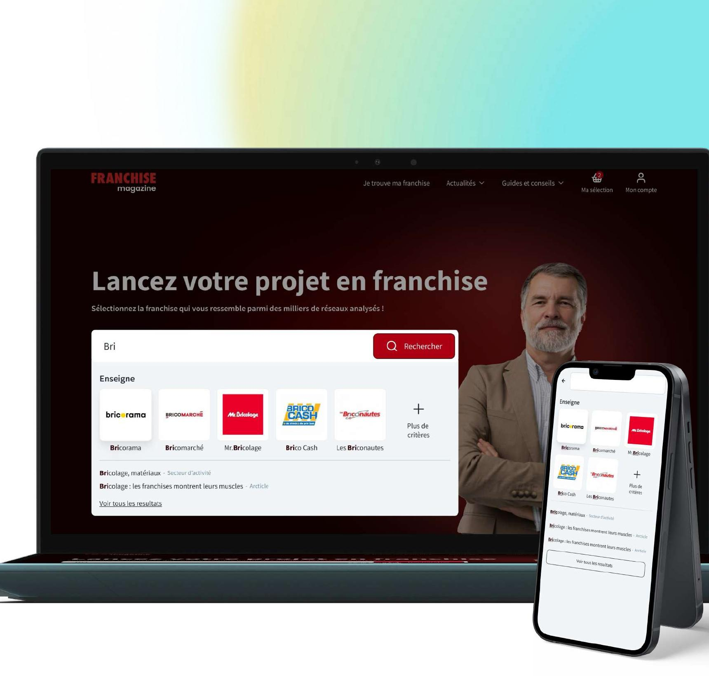

Disponible · Strasbourg, Luxembourg ou à distance
Bonjour, moi c'est Simon. Product Designer.
J'ai passé 10 ans dans la même entreprise, à commencer par l'intégration web jusqu'au poste de Product Designer. Ce que j'aime, c'est comprendre pourquoi un utilisateur bloque, puis trouver la solution la plus simple pour qu'il aille au bout. Et je pose beaucoup de questions, pas pour contredire, mais pour être sûr de bien comprendre le problème.

Étude de cas · 8 min de lectureRefonte de trois sites franchise, pensée comme un seul parcoursParcours
Plus que PRO · Obernai · 2016–2026- 01Product Designer / Lead UIJ'ai piloté la refonte complète de nos trois sites franchise, et créé puis maintenu le design system commun. Mon rôle : aligner les enjeux business, l'expérience utilisateur et les contraintes techniques.2025–2026
- 02UI DesignerDes interfaces de l'idée jusqu'au prototype, en squad agile avec les devs et les PO. J'ai aussi mis en place et standardisé nos process de design pour gagner en efficacité.2021–2025
- 03Web DesignerBannières, visuels pour les réseaux sociaux, affiches et plaquettes, toujours dans le respect de l'identité de marque. Et toujours de l'intégration.2019–2021
- 04Intégrateur Web / UIBeaucoup de contenus à intégrer, des maquettes à respecter au pixel près et des tests sur tous les navigateurs. C'est là que j'ai appris comment un design se construit vraiment.2016–2019
Avoir commencé par le code m'aide encore aujourd'hui : je sais ce qui sera simple ou compliqué à développer, et je parle le même langage que les devs. J'utilise aussi l'IA (Claude, ChatGPT, Gemini) au quotidien, pour analyser un besoin ou explorer plusieurs pistes d'interface plus vite.
Formation, outils, langues
Formation
- Formation UX designFormation pro · 2022
- Licence Pro MMIIUT du Puy-en-Velay · 2015
- DUT InformatiqueIUT Robert Schuman · 2014
Outils
- FigmaUI design, prototypage
- Suite AdobeGraphisme
- ClarityAnalyse des comportements
- ClickUp, MiroGestion de projet, ateliers
- Claude, ChatGPT, GeminiAnalyse et exploration
Langues
- FrançaisLangue maternelle
- AnglaisProfessionnel
Étude de cas
UX · UI · Design system · 8 min de lectureLa refonte de trois sites franchise, pensée comme un seul parcours.
Le but était simple : qu'une personne qui veut se lancer en franchise trouve la bonne enseigne et la contacte, sans se perdre en route.
Le problème
Les gens partaient avant d'avoir contacté une seule enseigne.
Les trois sites avaient été rachetés à des moments différents, et chacun vivait sa vie. Pour quelqu'un en reconversion, se lancer en franchise, c'est un gros engagement. Il a besoin de comparer, de se rassurer. Sur les anciens sites, il ne trouvait pas les enseignes qui lui correspondaient et ne voyait même pas l'apport demandé. Alors il partait.
Et pour nous, moins de demandes, c'était aussi moins d'arguments pour convaincre les franchiseurs de travailler avec nous.
- On ne savait pas par où commencer.
- Les infos importantes, comme l'apport, étaient noyées dans les fiches.
- Il fallait remplir un formulaire par enseigne, et sur mobile, c'était pénible.
La recherche
Choisir une franchise, c'est un peu comme choisir une maison ou une voiture.
On a fait un benchmark des concurrents (Toute la Franchise, l'Observatoire de la Franchise). Mais on est aussi allés voir l'immobilier (iad) et l'auto (La Centrale), parce que le besoin est le même : un achat important, avec beaucoup de critères à comparer. Ils ont des années d'avance sur les filtres et les fiches détaillées.
On a aussi eu accès à tous les retours que les commerciaux faisaient remonter des franchiseurs et des franchisés. C'est là qu'on a vraiment compris où ça bloquait.
« Je veux bien me lancer, mais je ne peux pas me permettre de me tromper d'enseigne. »Marc, 42 ans · persona porteur de projet
« Je ne cherche pas plus de candidats, je cherche les bons. »Sophie, 38 ans · persona franchiseur
Décision 1 · Trouver
Un questionnaire avec uniquement des cases à cocher.
- Problème
- Avec des milliers de réseaux, impossible de savoir par où commencer.
- Ce que j'ai fait
- Un questionnaire de quelques étapes qui calcule un pourcentage de compatibilité avec chaque enseigne.
- Pourquoi
- Que des cases à cocher, aucun champ à remplir. Je voulais éviter au maximum la frustration dès le premier contact.
Un point qui a fait débat : le résultat ne s'affiche qu'après avoir laissé ses coordonnées. La direction voulait récupérer des contacts. J'ai essayé de rendre l'échange honnête : un vrai résultat personnalisé, et une explication claire de ce qu'on fait des données.
Décision 2 · Agir
Un panier, comme sur un site e-commerce.
- Problème
- Un formulaire à remplir pour chaque enseigne. Au bout de la deuxième, les gens abandonnaient.
- Ce que j'ai fait
- « Ma sélection », toujours visible avec son compteur. On ajoute les enseignes qui nous intéressent, puis on envoie une seule demande de documentation.
- Pourquoi
- On remplit ses infos une seule fois, et le compte est créé en même temps. C'est la logique d'un panier, appliquée à la franchise.
Décision 3 · Comparer
Pouvoir comparer, et se rassurer.
- Problème
- L'apport était caché dans les fiches, et les avis étaient éparpillés un peu partout.
- Ce que j'ai fait
- Une recherche avancée avec des catégories parlantes (« Sans apport », « En zone rurale »…), un comparateur et une note globale.
- Pourquoi
- Le nombre de résultats se met à jour à chaque filtre, donc on voit tout de suite l'effet de ses choix. Et la note réunit les avis et les Trophées de L'Indicateur, pour avoir un seul repère fiable.
Le design system
Une seule base pour trois marques.
J'ai créé un design system pour centraliser la structure des trois sites, des couleurs jusqu'aux composants de page. AC Franchise et Franchise Magazine partagent la même base, chacun avec son propre univers graphique. J'ai aussi affiché le niveau de contraste sur chaque couleur, pour que l'accessibilité ne soit pas une question qu'on se pose à la fin.
Avec le recul
Ce que je ferais différemment.
On a testé en interne, pendant la recette, et la nouvelle version était clairement plus simple à utiliser que l'ancienne. Mais on n'a jamais testé avec de vrais utilisateurs. J'ai poussé pour le faire, la direction n'a pas suivi. Aujourd'hui, je l'imposerais dès le début du projet.
Le site est en ligne, mais à cause de changements en interne, on n'a pas eu le temps de le peaufiner. Les micro-interactions n'ont pas été faites. Voilà celles que j'avais en tête :
- 01Une petite animation sur le compteur quand on ajoute une enseigne à « Ma sélection ».
- 02Une barre de progression dans le questionnaire.
- 03Des transitions douces entre les résultats et les fiches.
On en discute ?
Je cherche un poste de Product Designer ou UX/UI. Si vous voulez voir l'étude de cas complète ou le prototype, écrivez-moi.
En dehors du design, je fais de la photo, je voyage dès que je peux, je ne dis jamais non à un escape game et je suis la Formule 1 de près.